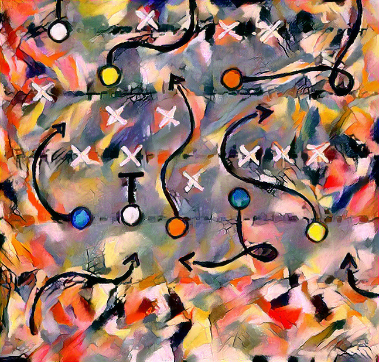
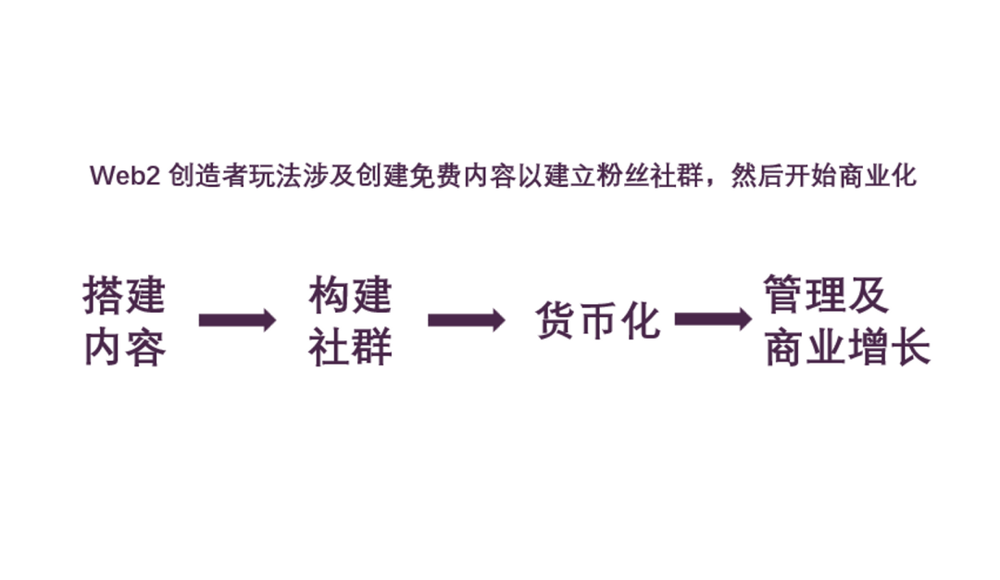
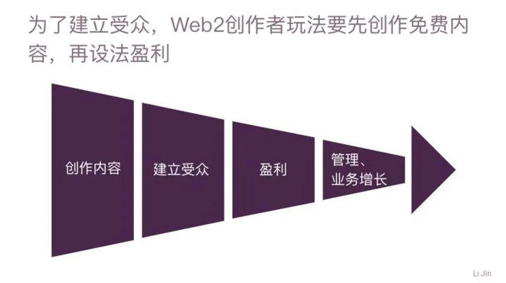
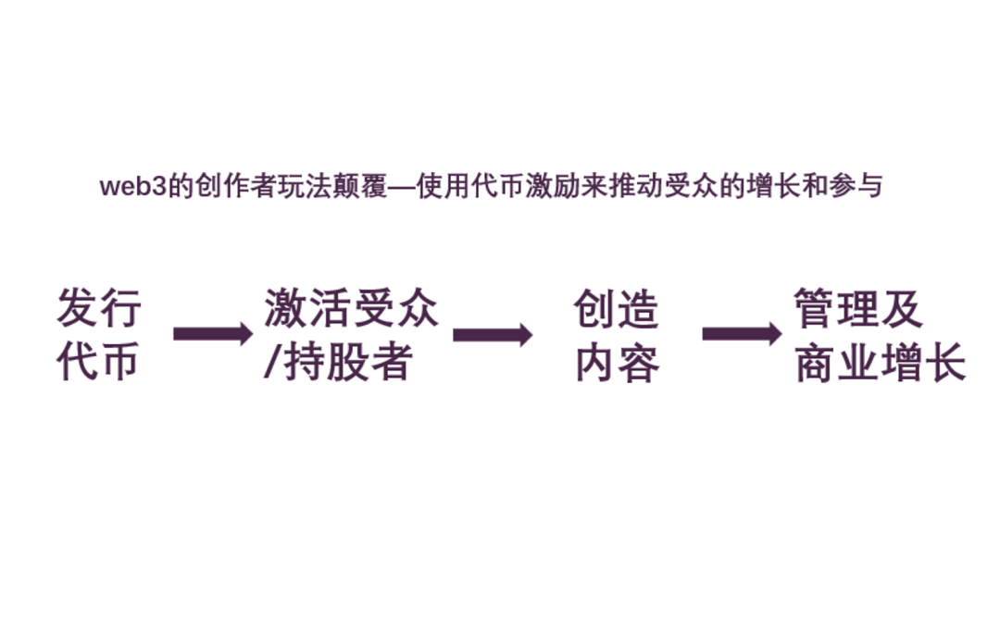
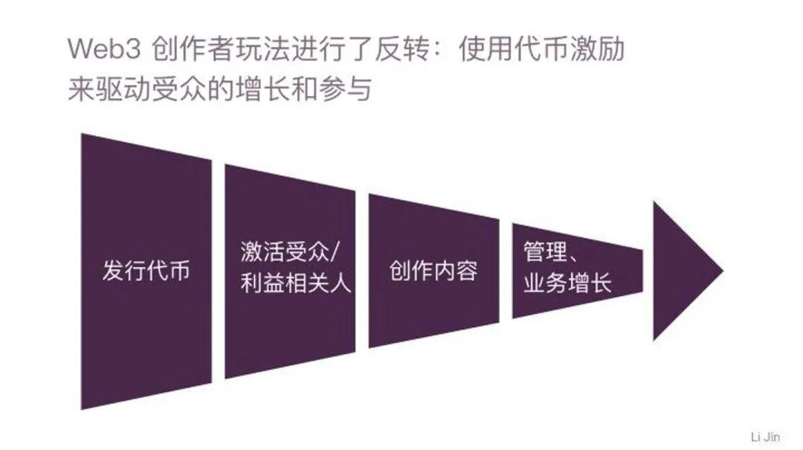
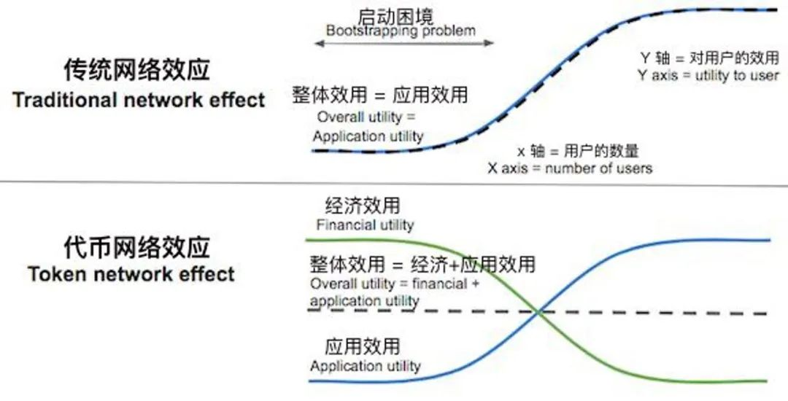

Web3 正在颠覆传统在线创造模式
BY LI JIN
写于 2022 年 9 月 16 日
图像由 NightCafe 生成
2021 年，音乐人 Daniel Allan 开始制作《Overtimulated》专辑。他本可以像许多其他网络创作人一样，花上数月、甚至数年的时间，完成内容制作和发行，指望最后能吸引足够多的粉丝，赚到足够多的钱来全职从事这份工作。或者，他也可以走一条更传统的路子：向传统音乐厂牌兜售自己的作品，盼着有人能赐给他一份大礼──唱片合约。
但是，Daniel 选择了一条与众不同的道路：他在 Mirror 上销售代币，为自己的新专辑发起众筹，并从 87 位支持者那里筹集到 50 个 ETH（当时价值约为 14.2 万美元）来资助他的音乐创作。作为投资回报，代币持有者获得这位艺人利润的 50%──并可以和 Daniel 本人直接联系。后来，谈到加密货币对他本人工作的影响时， Daniel 在自己的 Mirror 页面上写道：「头一回，我全部拥有了自己发布的音乐，并且人们也为我的作品赋予了实际的价值。」
像 Daniel 这样的 Web3 原生创作者，是创作者经济新模式中先行者的代表。
我们曾连篇累牍地介绍过，网络和平台如何借助代币为用户分配所有权，以实现快速壮大的目标。同样，代币也是创作者从无到有地吸引受众和资本的新型强大工具。曾经，创作者需要免费进行内容创作，寄希望于逐渐积累受众，慢慢实现盈利。如今，有了代币，创作者们能够提前获得受众并从中获利，随后再用这些所得和粉丝来支持内容创作，进而做大自己的业务。
换言之：Web3 颠覆了传统的在线内容创作模式。这一范式转变，将对创作者的工作方式，粉丝与作品的关系，以及广阔的创作者生态系统如何从整体上发挥作用产生重大影响。
创作者玩法的演变
这并不是创作者玩法的第一次改变。互联网时代之前，创作者需要先构思内容，然后向音乐厂牌、图书出版商、电视制作公司之类的机构推销，这些机构有权决定制作哪些内容。为了换取前期资金、获得发行渠道，创作者们不得不放弃重要的创意控制权，以及很大一部分未来收益。
随着 Web2 时代 UCG（用户创作内容）平台的兴起，出现了一种新的创意工作途径。创作者能够在诸如 Instagram 以及 TikTok 等平台上在线发布他们的作品，直接触及受众。随着受众的增加，各种盈利途径开始变得可行，包括广告、品牌赞助、订阅及商品交易等。

传统的创作者生命周期
在 Web2 模式下，创作者能够保留其作品的创意所有权，但却面临者一条漫长的财务生存之路。创作者事先投入了大量的时间和精力进行内容创作，却不知道何时、是否能够看到回报。这种状况导致了创作者的倦怠，并且对不太富裕的创作者构成了入行阻碍。
换而言之，Web2 模式下的创作者面临着冷启动的挑战：为了赚钱，需要有受众；但为了增加受众，又需要能够资助内容创作的资源。Web3 创作者的玩法，是克服这个冷启动问题的新途径。
Web3 创作者玩法：借助代币从无到有地吸引受众和资本
Web3 模式与 Web2 创作者的玩法模式恰恰相反。为了建立能够带来营收的庞大粉丝群体，Web3 创作者不需要先从创作免费内容开始，而是通过创建代币（NFT 或同质化代币）来直接营业。它会吸引那些对该资产的所有权所具有的潜在利益感兴趣的人，也即粉丝中的初始受众。然后，创作者可以利用从代币销售中获得的的初始资金，以及代币持有者群体来启动其创意工作。于是，这类粉丝也加入了游戏，见证创作者取得成功，并受到激励，甘愿充当成创作者及其作品的布道人。内容创作、受众增长和盈利的良性循环就这样开始了。
这一玩法的关键在于数字稀缺性：随着创作者名气变大或者更加成功，他们发行的代币也会变得更加抢手和值钱。通过代币化实现数字稀缺性的重大意义，在我关于 Web3 对创作者经济的影响的博文中也进行了解读：
通过将作品制作成 NFT，创作者为媒体所有权和出处创建了一个可验证的链上记录。最终结果是一件唯一的、可追溯到艺术家的数字资产。热爱该创作者作品的粉丝愿意为这件经典媒体作品支付更高的费用，创作者也能够更好地捕获粉丝的全部支付意愿。
 Web3创作者的生命周期
这种 Web3 创作者模式反映了 Chris Dixon 为「启动代币激励网络」所勾勒出的要点。在传统网络中，一个新网络的用户效用受限于应用的效用──或者对创作者而言，受限于其创意产品的效用。代币则引入了一个额外的效用来源：金融实用性。在一个网络的早期──或者说，在一位创作者事业的早期，代币为受众提供了一个补充性的效用来源。
来源：a16z
在各种创意相关的垂直领域，这样的例子已经不胜枚举。在电影行业，Shibuya 通过出售制片人通行证 NFT，为制作动画剧集《白兔》筹得 400 ETH（约合 120 万美元），该通行证允许持有人决定每个章节的进展，并成为成品电影的共同所有者。同样，电影/动画制作人 Robbie Shilstone 在 Formfunction 平台上通过 NFT 筹集了超过 324 SOL，数十名支持者同时也能够参与电影的制作过程。在真人秀领域，Mad Realities 通过销售 NFT 为他的约会节目众筹了 172 枚 ETH，其NFT 所有者拥有多项治理权，包括每周对演员进行投票，在拍摄时为参赛者刷礼物，并投票选出获胜的伴侣。出版行业，Tally Labs 即将出版的小说《Bored & Dangerous》将 2800 名 Writers Room NFT 持有者纳入写作过程，NFT 持有人有权决定书中出现的角色，并对故事的发展方向进行投票。音乐领域，许多 Web3 艺术家已经尝试了类似 Daniel Allan 的实验，向粉丝空投代币，并提供诸如试听会、代币持有者限定内容等福利。
在这些案例中，代币不仅有助于创作者获得工作所需的前期资金，而且在许多情况下，代币甚至成为产生首批受众的谢林点（Schelling point）。有了代币提供的激励一致性，这些受众变成了活跃的共同创作者和利益相关者，获得了引导和塑造作品的原动力，成为作品的布道人。
这对创作者经济意味着什么？
虽然对代币的使用仍处于起步阶段，但创作者的这一新玩法很可能对创作者经济产生影响，尤其在三个方面：创意工作的平民化、粉丝文化的性质、以及创作者自身的角色。
1. 更容易走上创作之路
Web2 创作者模式下，创作者在看到任何投资回报之前，通常要花费很长时间创作免费内容。代币玩法加快了获得资本和受众的速度，因而降低了这类经济壁垒，使得广大心怀抱负的创作者得以追求创意事业。
当然，目前仍有一些阻碍需要考虑。虽然这种玩法可以促进资金和受众的增长，但它并没有消除培养一小群关注者所需要付出的前期努力，他们是一群乐于接受创作者发行的代币的铁粉。启动众筹时，Daniel Allan 只有大约 200 名推特粉丝──这样的受众规模对于广告等传统盈利模式来说确实可行性不高，然而他的确不得不花费大量时间去和收藏者培养关系。Billboard 的一篇文章中描述到：「在《Overstimulated》发行前的几个月里，Allan 每天在 Twitter 和 Discord 上花费超过 8 小时。他发私信给 Web3 音乐领域的每个人。他加入几十个 Discord 服务器，每天跟大家说 “gm”（Good Morning），并与音乐 NFT 玩家建立联系。[...] 众筹活动结束时，这张专辑有 87 位支持者──其中至少有 50 位都是 Allan 事先有过个人联系的。」Web3 创作者的玩法减少了盈利所需的受众规模，但事实上，与为数不多的铁粉建立更深的关系也愈加重要了。
其它主要障碍则在于教育和接触的机会：为了让创作者能够用得上这个新玩法，他们必须意识到这条途径的存在，并且有机会接触到可用的工具。这就是为什么 Web3 生态系统继续投资于开发各种资源和工具至关重要，只有这样，才能让无论处于什么背景的用户都能够有接触的机会。教育类项目，如 Seed Club 的加速孵化器、Forefront 的 Web3 创作者空间、HIFI Labs 的 Web3 艺术家群组计划、以及 Music NFT 发布平台等，都是为了满足让更多创作者加入 Web3 这一重要需求的活动案例。
2. 粉丝文化性质的演变
在 Web2 的创作者经济中，创作者的观众之间的关系基本上是单向的。Web3 创作者的玩法则开辟了一条道路，让粉丝能够在两个主要的载体上发挥更加积极的作用。
从粉丝到投资人
在 Web2 创作者模式下，粉丝被创作者吸引是出于内在原因──因为他们喜欢创作者的作品。Web3 模式引入了一个额外的动机：所有权。一些支持者会出于投机的原因被吸引──因为他们将所有权视作从二次销售中牟利的必要条件。
由于代币所有权给激励机制带来的转变，创作者及其社区之间的态势也有发生改变的可能。当粉丝遭遇经济损失时，创作者和受众之间的关系会发生什么变化？如果代币贬值，粉丝会撤回他们的支持吗？这些都是创作者生态在新的创作者玩法走向成熟的过程中必须要解决的问题。
从漠然的路人到活跃的利益向相关者
传统上，内容创作是一个单向的过程：创作者负责创作，受众负责消费。新的创作者玩法将创意工作变成了一个参与式的过程，代币持有者想直接影响到作品本身，因为作品的成败与他们的经济利益息息相关。Jenkins the Valet 就是一个例子, 这枚无聊猿 NFT 的所有者一手打造了它的故事和人设；现在它已经与 CAA 签约，成为一系列全新创意项目的基础。所有这些衍生项目都提高了无聊猿的知名度，为该作品集的生态系统积累了价值。很难想象，在传统背景下粉丝会不遗余力的去帮助创作者取得成功，但 Web3 提供了经济利益的一致性，从而激励社区参与者去做更多的事情。
与这种转变相关的影响是不可预料的。受众参与共创过程，会增强还是限制创意潜力？创作者如何平衡自己的创意愿景和支持者的愿景？
3. 创作者角色的改变
随着 Web3 玩法的应用，会发生变化的并不仅仅是粉丝群体，创作者也会发现自身的角色产生了变化。这是因为 Web3 玩法改变了创作者成功所需的技能组合。
比之于自顾自地盯着内容创作，创作者不得不从一开始就熟练掌握是市场营销、发展人脉和社区管理等技能（或者，将这些工作委派给具备相应技能的社区成员）。他们必须一路像创业公司创始人那样运作：筹集资金、传播愿景，以及平衡相关人员的利益。在日益流行的 CC0 模式（“无保留版权”）下，这一点被发挥到了极致──采用 CC0 的创作者允许他人以任何方式使用其作品，包括用于商业目的。CC0 创作者的角色变得更像是社区管理和照应，而不是内容创作的第一方。
同样，这种转变带来的更广泛的影响还有待观察。来自粉丝投资人的意见和期待会不会造成最终作品的无序、阻碍创意潜力，并诱发更严重的创作者焦虑或倦怠？或者，大社区对作品的集体声援，是否将对创意项目有所裨益 ?
创作者的更多选择意味着更有活力的创作者经济
在过去的几十年甚至几个世纪中，通过更多的机会、各种商业模式，和新技术带来的低入行门槛，创作者经济演绎了释放潜能的精彩故事。代币激励为创作者经济提供了一个令人兴奋的新工具，它能够让创作者从无到有地获得支持者、掌控新的盈利和价值捕获机制，并与他们的受众共同进行创作。
正如 Web2 玩法没有取代传统出版行业，Web3 玩法也不会完全取代 Web2 创作者经济的玩法。相反，它为创作者开辟了新的道路，最终将通往一个更加强大、更具活力的创作者经济。
如果你是这个领域的创始人或者正在试验新模式的创作者，欢迎来信交流：li@variant.fund.
感谢 Katie Parrott.
作者：Li Jin
译者：SuanNai
审校：Roy
排版：Dorothy
审核:SuanNai